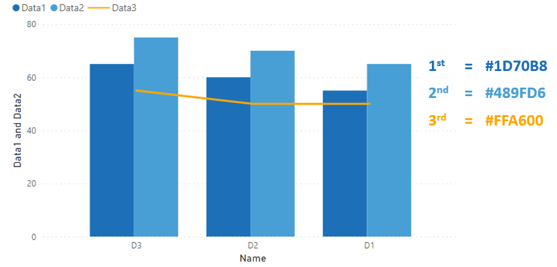
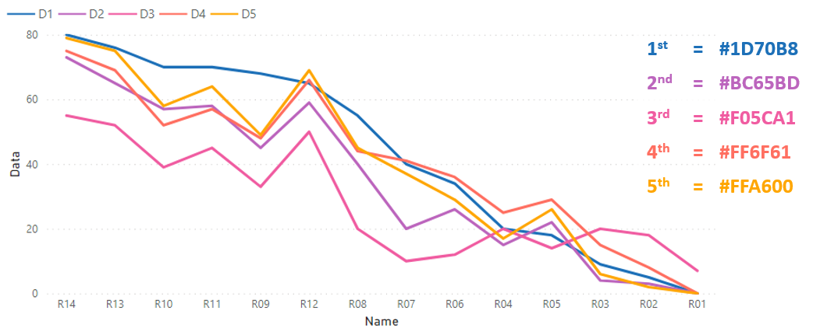

Chapter 7 Links
7.1 What is Power BI desktop?
This is the link to everything you need to know about Power BI (and where you can download the Microsoft tutorial pdf)
https://docs.microsoft.com/en-us/power-bi/desktop-what-is-desktop
7.2 Government colour standards
The following colour palette is recommended for standard data science visualisations and has been incorporated into the powerBI standard temple json.
7.2.1 Bar Chart (colour palette)

1st = #1D70B8, 2nd = #BC65BD, 3rd = #F05CA1, 4th = #FF6F61, 5th = #FFA600
7.2.2 Bar Chart (single palette)

1st = #1D70B8
7.2.3 Bar Chart (tinted palette)

1st = #1D70B8, 2nd = #3088C8, 3rd = #489FD6, 4th = #62B7E4, 5th = #7FCFF2
7.2.4 Combi Chart (colour palette)

1st = #1D70B8, 2nd = #F05CA1, 3rd = #FFA600
7.2.5 Combi Chart (tinted palette)

1st= #1D70B8, 2nd = #489FD6, 3rd = #FFA600
7.2.6 Line Chart (colour palette)

1st = #1D70B8, 2nd = #BC65BD, 3rd = #F05CA1, 4th = #FF6F61, 5th = #FFA600
7.2.7 Line Chart (tinted palette)

1st= #1D70B8, 2nd = #3088C8, 3rd = #489FD6, 4th = #62B7E4, 5th = #7FCFF2
7.2.8 Additional resources:
7.3 Custom visuals and the AppSource marketplace
https://powerbi.microsoft.com/en-us/developers/custom-visualization/
https://appsource.microsoft.com/en-us/marketplace/apps?product=power-bi-visuals
7.4 Useful links
Chart types: https://docs.microsoft.com/en-us/power-bi/visuals/power-bi-visualization-types-for-reports-and-q-and-a
Layouts: https://powerbi.tips/2018/01/introducing-layouts/
Themes: https://docs.microsoft.com/en-us/power-bi/desktop-report-themes
Gallery: https://community.powerbi.com/t5/Themes-Gallery/bd-p/ThemesGallery